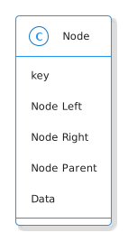

Binary Search Tree Node
Table of Contents
This is the next post in a series on Binary Search Trees that start with this post.
The Abstract
As mentioned in the first post, the Binary Search Tree is a linked structure made up of Nodes that look more or less like this:

And which maintain the Binary Search Tree Property. I'm going to forego the data field and add a couple of methods to make it more convenient for me, but most of the way this will work will be to pass nodes (particularly the root) to functions.
The Implementation
Since I'm using pypy 3.7 there's a problem with the declaration of an attribute of the Node class being a Node object (it isn't defined yet) but according to this post on stackoverflow we can import annotations from the future to fix it.
# python
from __future__ import annotations
# this project
from bowling.types import Orderable
class Node:
"""A Node in a Binary Search Tree
Args:
key: item to compare nodes
parent: parent of this node
left: left child
right: right child
"""
def __init__(self, key: Orderable, parent: Node=None,
left: Node=None, right: Node=None) -> None:
self.key = key
self._parent = None
self.parent = parent
self._left = None
self.left = left
self._right = None
self.right = right
return
Properties
Parent
@property
def parent(self) -> Node:
"""The parent of this node"""
return self._parent
@parent.setter
def parent(self, parent_: Node) -> None:
"""Sets the parent and updates the parent
Warning:
this will clobber the parent's child if there's a node where this should
be
Args:
parent: to add to self
Raises:
AssertionError if parent and self have same key
"""
if parent_ is None:
self._parent = parent_
return
if self == parent_:
raise AssertionError(f"Self ({self}) cannot equal parent ({parent_})")
# since the left and right assignments update the parent
# we need a hack to get around the setters or you end up
# with an infinite loop - we set left, they set parent, we set left,...
if self < parent_:
parent_._left = self
else:
parent_._right = self
self._parent = parent_
return
Left
@property
def left(self) -> Node:
"""The left child"""
return self._left
@left.setter
def left(self, new_left: Node) -> None:
"""Sets the left and its parent
Raises:
AssertionError if left isn't less than self
Args:
new_left: a node to be the left child or None
"""
if new_left is None:
self._left = new_left
return
assert new_left < self, f"Left ({new_left} not < self {self})"
new_left.parent = self
self._left = new_left
return
Right
@property
def right(self) -> Node:
"""The right child"""
return self._right
@right.setter
def right(self, new_right: Node) -> None:
"""Sets the right and its parent
Raises:
AssertionError if right isn't greater than self
Args:
new_right: a node to be the right child or None
"""
if new_right is None:
self._right = new_right
return
assert new_right > self, f"right ({new_right} not > self ({self})"
new_right.parent = self
self._right = new_right
return
Comparisons
These are convenience methods to make it so that you can compare the node-objects without referring to the key (see the python Data Model documentation). In reading the documentation I thought that you had to implement everything, but after implementing less than and less than or equal to the greater than and greater than or equal to comparisons started to work. I guess if you don't implement them they just take the negative of the less than cases.
Equal
def __eq__(self, other: Node) -> bool:
"""Check if the other node has an equal key
"""
return type(self) == type(other) and self.key == other.key
Less Than
def __lt__(self, other: Node) -> bool:
"""See if this key is less than the other's
Raises:
TypeError: the other thing doesn't have a key
"""
if not type(self) == type(other):
raise TypeError(f"'<' not supported between '{type(self)}' "
"and '{type(other)}'")
return self.key < other.key
Less Than or Equal
def __le__(self, other: Node) -> bool:
"""See if this key is less than or equal to other's"""
if not type(self) == type(other):
raise TypeError(f"'<' not supported between '{type(self)}' "
"and '{type(other)}'")
return self.key <= other.key
Check Nodes
This is a convenience method to check if a node and its sub-trees maintain the Binary Search Tree Property. It calls the children too so that the whole tree can be checked by calling this on the root. Now that there's checks when the attributes are set this isn't quite as necessary. The only time you might need it is if the attributes are set directly instead of using the setter.
Note: Although the Binary Search Tree Property allows duplicate keys, once you start doing things with the tree like inserting and deleting nodes it causes problems. Also, it's not likely that the keys are what you would be most interested in when using a tree, it would be the data associated with the node, so what would it mean to have two different items associated with the same key? There are probably uses for this, but to make it simpler I'm going to treat the keys more like dictionary keys and say that it's a mistake to have duplicates.
def check_node(self) -> None:
"""Checks that the Binary Search Tree Property holds
Raises:
AssertionError: Binary Search Tree Property violated or duplicates exist
"""
assert self.parent is None or type(self.parent) is Node,\
f"self.parent={self.parent}, type={type(self.parent)}"
if self.left is not None:
assert self.left < self, f"Left: {self.left} not < Self: {self}"
self.left.check_node()
if self.right is not None:
assert self.right > self, f"Right: {self.right} not > Self: {self}"
self.right.check_node()
return
String Output
This is to make it a little easier to print.
def __str__(self) -> str:
"""The key as a string"""
return str(self.key)
Testing
I'll have to break this up later.
Imports
# pypi
from expects import (
be_above,
be_above_or_equal,
be_below,
be_below_or_equal,
be_none,
equal,
expect,
raise_error
)
# software under test
from bowling.data_structures.binary_search_tree.node import Node
One Node
parent = Node(key=10)
parent.check_node()
expect(parent.key).to(equal(10))
expect(parent.left).to(be_none)
expect(parent.right).to(be_none)
expect(parent.parent).to(be_none)
Check the Comparisons
uncle = Node(key=9)
expect(uncle).to(equal(Node(key=9)))
expect(uncle).to(be_below(parent))
expect(uncle).to(be_below_or_equal(parent))
brother = Node(key=20)
expect(brother).to(be_above(parent))
expect(brother).to(be_above_or_equal(parent))
# I'm still deciding who's responsible for checking if a node exists
# for now I'll copy what happens when None is compared to ints
expect(brother).not_to(equal(uncle.parent))
expect(lambda: brother < uncle.parent).to(raise_error(TypeError))
expect(lambda: brother.parent > uncle).to(raise_error(TypeError))
Check the Two-Way Updates.
-
Set the Parent
In the constructor.
parent = Node(key=10) left = Node(5, parent=parent) expect(left.parent).to(equal(parent)) expect(parent.left).to(equal(left)) right = Node(15, parent=parent) expect(right.parent).to(equal(parent)) expect(parent.right).to(equal(right)) def bad_parent(): left = Node(key=10, parent=Node(10)) return expect(bad_parent).to(raise_error(AssertionError))
On the object
parent = Node(key=10) left = Node(5) left.parent = parent expect(left.parent).to(equal(parent)) expect(parent.left).to(equal(left)) right = Node(15) right.parent = parent expect(right.parent).to(equal(parent)) expect(parent.right).to(equal(right)) def bad_parent(): parent = Node(key=10) left = Node(key=10) left.parent = parent return expect(bad_parent).to(raise_error(AssertionError))
-
Set The Left Child
left = Node(5) parent = Node(key=10, left=left) expect(parent.left).to(equal(left)) expect(left.parent).to(equal(parent)) parent = Node(key=10) parent.left = left expect(parent.left).to(equal(left)) expect(left.parent).to(equal(parent))
-
Set The Right Child
right = Node(15) parent = Node(key=10, right=right) expect(parent.right).to(equal(right)) expect(right.parent).to(equal(parent)) parent = Node(key=10) parent.right = right expect(parent.right).to(equal(right)) expect(right.parent).to(equal(parent))
The Check Node Method
uncle = Node(key=9)
parent = Node(key=10)
parent.check_node()
# parent is root
expect(parent.check_node).not_to(raise_error)
# parent is right child
parent.parent = uncle
expect(parent.check_node).not_to(raise_error)
# parent is left child
parent.parent = brother
expect(parent.check_node).not_to(raise_error)
def bad_check():
parent.check_node()
return
# left node is greater than the parent
lefty = Node(15)
def bad():
parent.left = lefty
expect(bad).to(raise_error(AssertionError))
parent._left = lefty
expect(bad_check).to(raise_error(AssertionError))
# left node is less than the parent
parent.left = None
parent.right = lefty
expect(parent.check_node).not_to(raise_error(AssertionError))
# right node is less than the parent
righty = Node(key=2)
def bad():
parent.right = righty
return
expect(bad).to(raise_error(AssertionError))
parent._right = righty
expect(bad_check).to(raise_error(AssertionError))
# right and left are okay
parent.left = righty
parent.right = lefty
expect(parent.check_node).not_to(raise_error)
parent = Node(key=10)
parent.left = Node(key=2)
# children of parent's children
def bad():
parent.left.left = Node(key=100)
expect(bad).to(raise_error(AssertionError))
parent.left.left = Node(key=0)
expect(parent.check_node).not_to(raise_error)
def bad():
lefty.right = Node(key=0)
expect(bad).to(raise_error(AssertionError))
# disallow duplicates
parent = Node(10)
def bad():
parent.left = Node(10)
expect(bad).to(raise_error(AssertionError))
parent.key = 11
expect(bad_check).not_to(raise_error(AssertionError))
def bad():
parent.right = Node(11)
expect(bad).to(raise_error(AssertionError))
parent.right = Node(12)
expect(bad_check).not_to(raise_error(AssertionError))
expect(str(parent)).to(equal(str(parent.key)))
The next post will be about traversing the tree in the order of the nodes.